| eng_lang | congruent | incongruent |
|---|---|---|
| first | 587 | 710 |
| first | 436 | 571 |
| first | 601 | 803 |
| second | 449 | 723 |
| second | 599 | 677 |
| second | 435 | 569 |
Building and sustaining a culture of open research: Lessons from PsyTeachR at the University of Glasgow
Dale Barr
School of Psychology & Neuroscience, University of Glasgow
what PSYTEACHR did
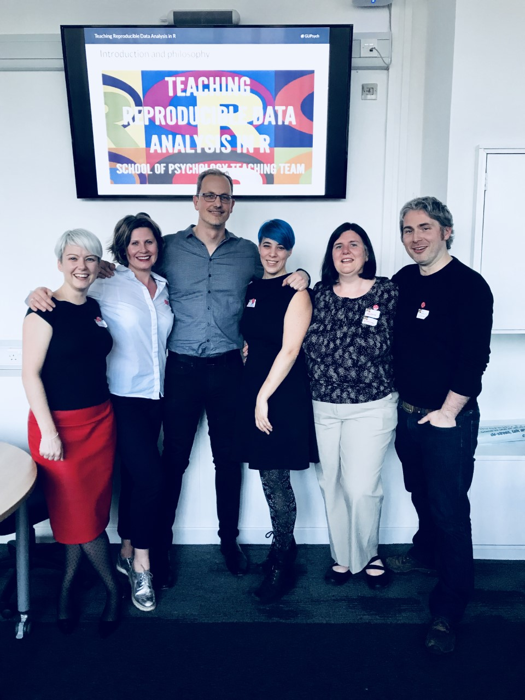
- critical mass of research & teaching staff and students following open research practices
- established an award-winning curriculum emphasizing open research for undergraduates and postgraduates
- released our curriculum as freely-available open educational materials (textbooks) https://psyteachr.github.io
- got ‘data skills’ on the agenda for British Psychological Society accreditation
on taking advice from your elders
career advice (~2002)
“Teach statistics. Course prep is one and done. It’s not like someone will come up with a better way of doing regression anytime soon.”
life advice (~2005)
“Buy a house, don’t throw your money away on rent. Real estate always goes up in California. You can’t lose.”
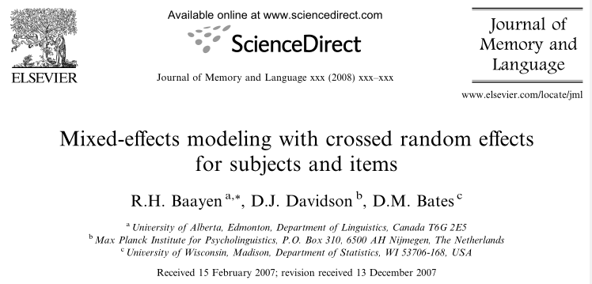
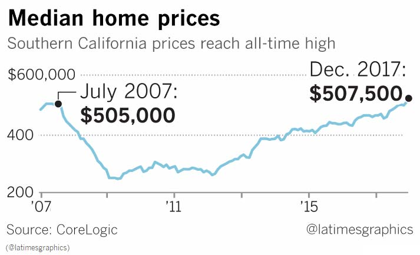
University of California, Riverside (2002-2010)
- MAMA journal club run by Dan Ozer, David Funder, and Bob Rosenthal
- 2003: Chandra Reynolds introduced me to “Hierarchical Linear Modeling”
- 2006: Doug Davidson (MPI-NL) introduced me to
lme4
glasgow (2010)
teaching 3rd year statistics; Methods & Metascience (Nov 11)
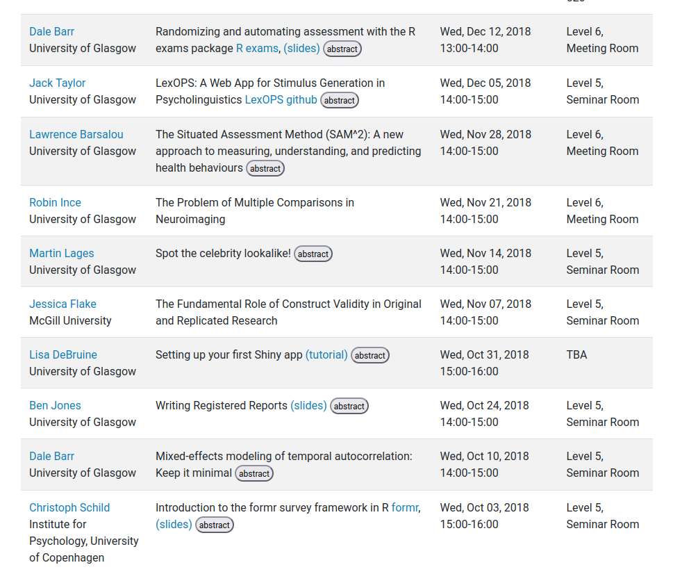
new responsibilities
statistics drop-in hours for UG students completing their theses
curriculum review
“What is something observable that you think students in your field ought to be able to do when they graduate, and are you adequately preparing them to do this?” (Nolan & Temple Lang, 2010)
all final year students must be able to “carry out an extensive piece of empirical research that requires them individually [my emphasis] to demonstrate a range of research skills, including planning, considering and resolving ethical issues, analysis and dissemination of findings” (QAA HE Benchmark statement 2019)
the fiction we pretend exists…
“Here is a table of (artificial) response times from 40 participants who performed a Stroop interference task (
stroop.xlsx). Response times are measured in milliseconds. Calculate descriptive statistics and test the hypothesis that the interference effect differs across language groups. Write up your results in APA format.”
“green” (incongruent)
“blue” (congruent)
…and the messy reality we keep hidden
[1] "demographics.csv" "S01.csv" "S02.csv" "S03.csv"
[5] "S04.csv" "S05.csv" "S06.csv" "S07.csv"
[9] "S08.csv" "S09.csv" "S10.csv" "S11.csv"
[13] "S12.csv" "S13.csv" "S14.csv" "S15.csv"
[17] "S16.csv" "S17.csv" "S18.csv" "S19.csv"
[21] "S20.csv" "S21.csv" "S22.csv" "S23.csv"
[25] "S24.csv" "S25.csv" "S26.csv" "S27.csv"
[29] "S28.csv" "S29.csv" "S30.csv" "S31.csv"
[33] "S32.csv" "S33.csv" "S34.csv" "S35.csv"
[37] "S36.csv" "S37.csv" "S38.csv" "S39.csv"
[41] "S40.csv" "S41.csv" "S42.csv" "S43.csv"
[45] "S44.csv" "transcript.csv" You ran a Stroop experiment using a computer program that spits out a separate CSV file (SXX.csv) for each participant. Participants made vocal responses into a microphone, and each response was recorded into a separate soundfile. The program used a “voice key” algorithm to detect the onset of speech, but it was not 100% reliable. It also stored the response in a soundfile, and you later went in and transcribed all the files into a single spreadsheet by hand (transcript.csv). You also kept track of participant demographics (demographics.csv) later realized that you forgot to record ‘first language’ values for some of the participants so you ran a few more.
demographics.csv
| id | age | eng_lang |
|---|---|---|
| 1 | 226 | first |
| 2 | 21 | second |
| 3 | 21 | first |
| 4 | 21 | second |
| 5 | 22 | NA |
| 6 | 24 | fist |
| 7 | 21 | second |
| 8 | 24 | first |
| 9 | 20 | second |
| 10 | 19 | NA |
transcript.csv
| id | trial | response |
|---|---|---|
| 1 | 1 | red |
| 1 | 2 | green |
| 1 | 3 | red |
| 1 | 4 | purple |
| 1 | 5 | purple |
| 1 | 6 | red |
| 1 | 7 | blue |
| 1 | 8 | red |
| 1 | 9 | red |
| 1 | 10 | brown |
- data provenance = human, therefore need to check for typos
S02.csv
| trial | timestamp | event | data |
|---|---|---|---|
| 1 | 161267 | DISPLAY_ON | BLUE-purple.png |
| 1 | 161947 | VOICE_KEY | NA |
| 2 | 163783 | DISPLAY_ON | RED-red.png |
| 2 | 164195 | VOICE_KEY | NA |
| 3 | 166143 | DISPLAY_ON | PURPLE-purple.png |
| 3 | 166543 | VOICE_KEY | NA |
| 4 | 168673 | DISPLAY_ON | BLUE-blue.png |
| 4 | 169380 | VOICE_KEY | NA |
| 5 | 171200 | DISPLAY_ON | RED-red.png |
| 5 | 171611 | VOICE_KEY | NA |
- participant ID is in the filename
- each participant’s data is in separate files; need to combine them
- trial condition (congruent/incongruent) is in the stimulus filename
BLUE-purple.png= incongruentRED-red.png= congruent
- response time must be computed by comparing adjacent
DISPLAY_ONandVOICE_KEYtimestamps - we need to get rid trials with (1) voice key failure; and (2) inaccurate responses
- but to calculate accuracy we have to extract word identity and font color and combine with
transcript.csvdata
- but to calculate accuracy we have to extract word identity and font color and combine with
the ‘data skills’ gap (McAleer et al., 2022)
- importing data
- checking for typos/inconsistencies
- transforming data
- getting data into the ’right place (e.g., participant ID in a filename)
- joining together data in separate tables
- computing new values from existing values (e.g., accuracy)
- pivoting from long to wide or (vice versa)
- reporting results
- copy/pasting into word vs dynamic reports
when does the bill come due? (and who pays?)
- invisible labor for supervisors / ECRs / local gurus
- hours of wasted effort doing things the most inefficient and error prone way
- insecurity and negative self-image for students
- perception that untaught parts must be ‘easy’ or self-evident and possibly… that “science is not for me”
convergence with the Zeitgest
- systematization of data wrangling (Hadley Wickham)
- simplification and development of the language
- appearance of exciting new software tools
- psychology entered a new phase of radical self-reflection and self-doubt
Wickham (2014) on tidy data
- Each variable forms a column.
- Each observation forms a row.
- Each type of observational unit forms a table.
and tidy tools to work with (2014-2016)
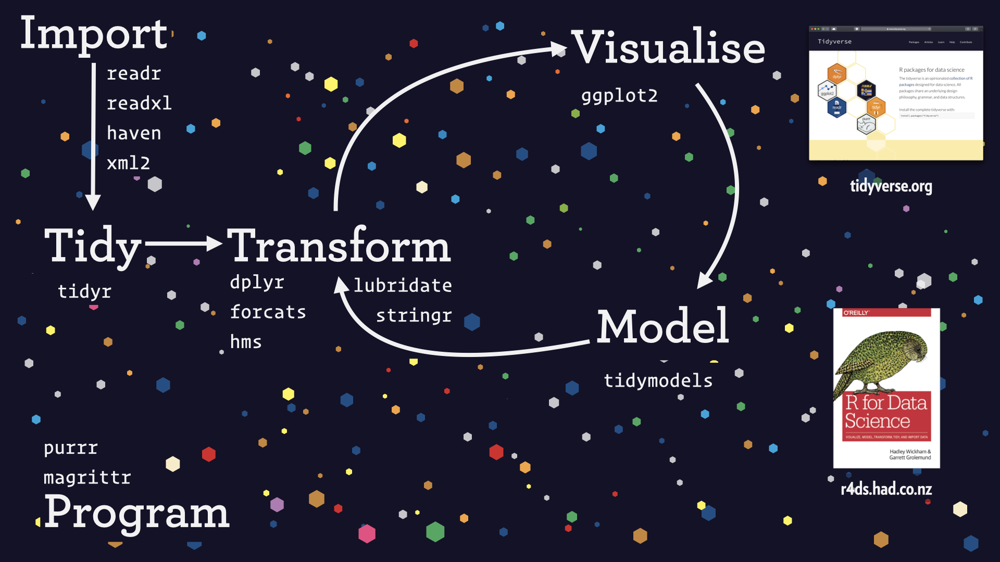
The “Wickham Six”
- one-table verbs
| verb | what it does |
|---|---|
select() |
include/exclude/rename variables (columns) |
filter() |
include/exclude cases (rows) |
arrange() |
sort the cases (rows) |
mutate() |
compute new variables (column) |
group_by() |
change the unit of analysis |
summarize() |
calculate aggregate values |
Claim: these six operations cover about 90% of data wrangling tasks
with these and the two-table verbs inner_join() and pivot_longer() / pivot_wider(), we cover almost everything
pipes made code readable
The {magrittr} pipe %>% (Stefan Milton Bache), later incorporated into {dplyr} and which inspired the later base R pipe |> made reading code like reading English text.
Compare:
RStudio IDE made code development very nice
(and very free)

dynamic reports were always exciting
…and offered a new way of teaching
- literate programming (Knuth, 1984) via Emacs org-mode (Carsten Dominik, 2003)
- org markdown → (html | LaTeX → PDF)
- Sweave (Friedrich Leisch, 2002)
- knitr (Yihui Xie, 2012)
- RMarkdown (Xie, Allaire, Grolemund, 2013-4)
- bookdown (Xie, 2016)
- quarto (2022-present)
…and of course…
reproducibility crisis (2012-?)
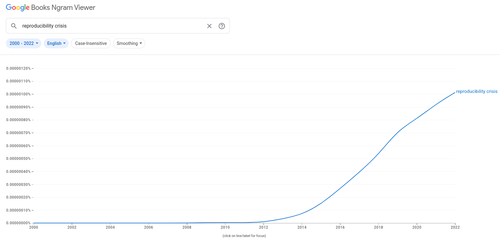
computational reproducibility
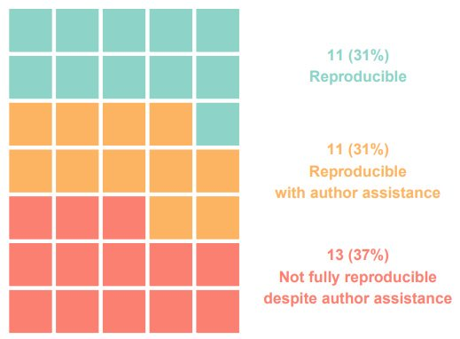
- study of papers published in Cognition (2014-17) as a result of new open data policy
- open data is not enough
how we did (and are still doing) it
- assemble a team (2011-4)
- train staff and provide support (2014-5)
- separately for staff and students
- adapt curriculum incrementally
- 2014: Level 3
- 2015: +Level 2
- 2016: +Level 1
- …and re-calibrate each year
- released our online course materials (2019)
- updated almost every cycle
Current undergraduate programme
| Year | Topics |
|---|---|
| 1 | RStudio IDE, R, data import, dynamic reports, data wrangling, summaries, probability (book) |
| 2 | data wrangling, data visualization, data distributions, t-test, correlation, regression, ANOVA (book) |
| 3 | General Linear Model (multiple regression), model comparison, mixed-effects regression, structural equation modeling (book) |
| 4 | advanded topics (e.g., cluster analysis, bootstrapping) |
- highly recommended for postgrads or staff wanting to upskill “Data Skills for Reproducible Research” 1-semester MSc course
- we also have a compact 1 year “zero to hero” course for our online Master’s programme (QuantFun)
an accelerating learning trajectory
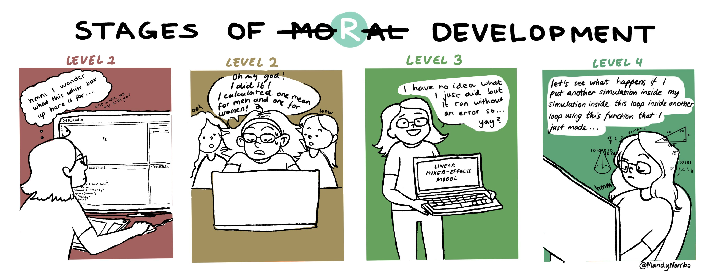
when our UGs become postgrads…
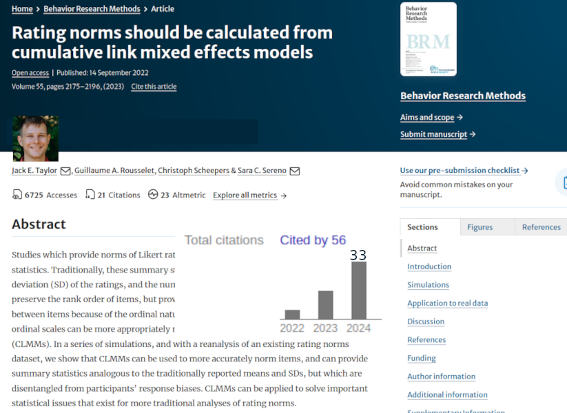
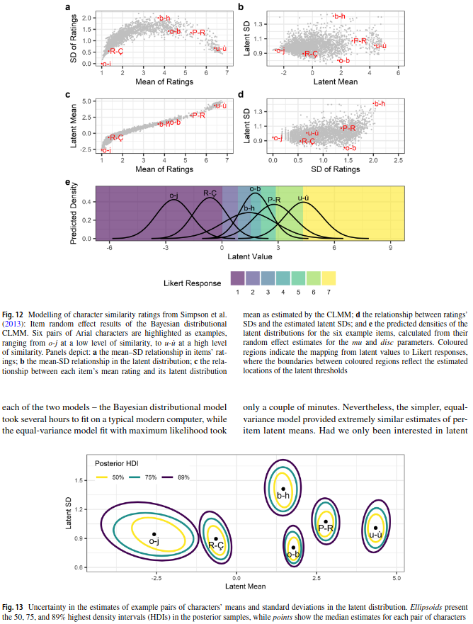
case study: how to sneak data wrangling and dynamic reports into an assignment on multiple regression
assignment workflow
- students receive an RMarkdown ‘stub’ file via content management system (CMS)
- the problem is broken down into stages, each of which has a code chunk with variables set to
NULL - student fills code into the chunks, checks that it knits (if the Rmd doesn’t knit, you must not submit) and submits it
- we run our own assessment package on a folder containing the stub files and then manually review and adjust
{assessr} - generate feedback files that are re-uploaded to the CMS where code is shown against the solution and instructor feedback
want big changes? you need a team
Engaging in open practices is a risky behavior, and risky behaviors don’t spread like viruses do. They require a network based on strong, trusted, local connections (Centola & Macy, 2007).
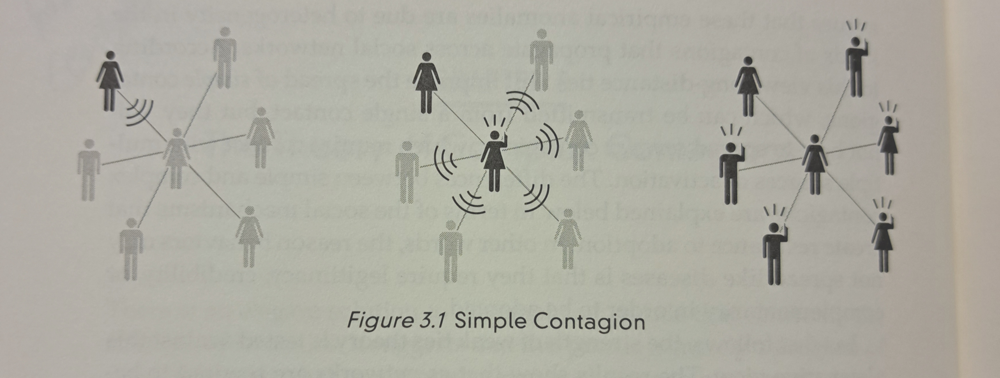
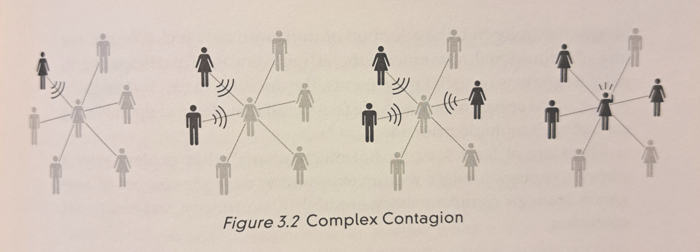
Any changes you make won’t stick unless you have a team to form a united front against the inevitable pushback!
but I don’t have a team!
Are you invested long-term in your institution? You can build it!
- Start with an inwardly-focused methods / stats journal club, offer training events, build from there (see ReproducibiliTea.org)
- Show people the benefit for their own research
- Garner enthusiasm with shiny tech, such as fancy graphics (ggplot2), web apps (shiny, D3), dynamic reports/websites (quarto)
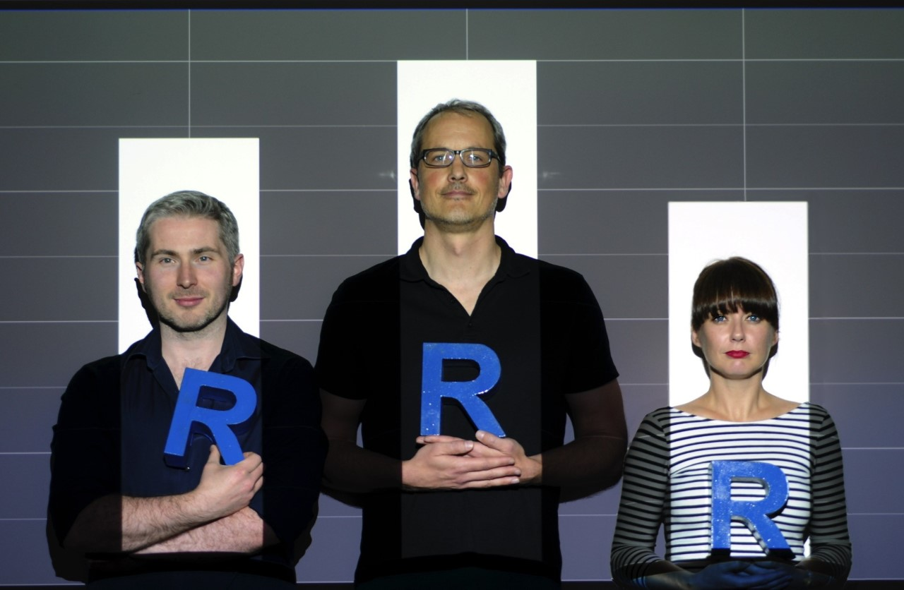
fancy a writing retreat to a Scottish isle?
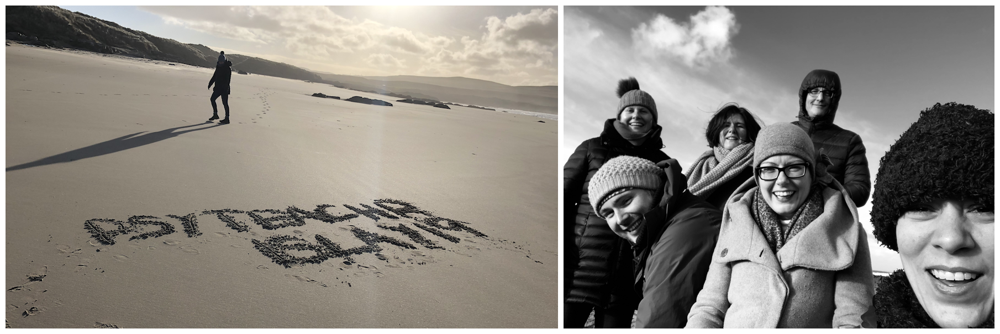
On a weekend trip to Islay (2019), Lisa DeBruine taught us to write books in bookdown (and to use Github) which made it possible for us to release our teaching materials online
some final thoughts & tips…
- “never accept the first no” - Grace Hopper
- start small, move incrementally; this is a long-term project
- don’t be the sole source of support: you will burn out
- did I mention you need a team?
- remember: by ignoring these things you create massive invisible labor that someone is currently doing (usually supervisor or ECR)
- give students a taste of what they are missing; this will spark demand that you can then leverage against timid administrators
- “if I were allowed, I would be teaching things in a different way [link to PsyTeachR.github.io]😉, please talk to your student rep and mention it in your course feedback”
it’s a long process full of frustration… but the reward is more than worth it!
References
Centola, D. (2018). How behavior spreads: The science of complex contagions. Princeton University Press.
Centola, D., & Macy, M. (2007). Complex contagions and the weakness of long ties. American Journal of Sociology, 113(3), 702–734.
Hardwicke, T. E., Mathur, M. B., MacDonald, K., Nilsonne, G., Banks, G. C., Kidwell, M. C., Hofelich Mohr, A., Clayton, E., Yoon, E. J., Henry Tessler, M., et al. (2018). Data availability, reusability, and analytic reproducibility: Evaluating the impact of a mandatory open data policy at the journal cognition. Royal Society Open Science, 5, 180448.
Knuth, D. E. (1984). Literate programming. The Computer Journal, 27(2), 97–111.
McAleer, P., Stack, N., Woods, H., DeBruine, L. M., Paterson, H., Nordmann, E., Kuepper-Tetzel, C. E., & Barr, D. J. (2022). Embedding data skills in research methods education: Preparing students for reproducible research. PsyArXiv. https://eprints.gla.ac.uk/322035/
Nolan, D., & Temple Lang, D. (2010). Computing in the statistics curricula. The American Statistician, 64(2), 97–107.
Wickham, H. (2014). Tidy data. Journal of Statistical Software, 59, 1–23.